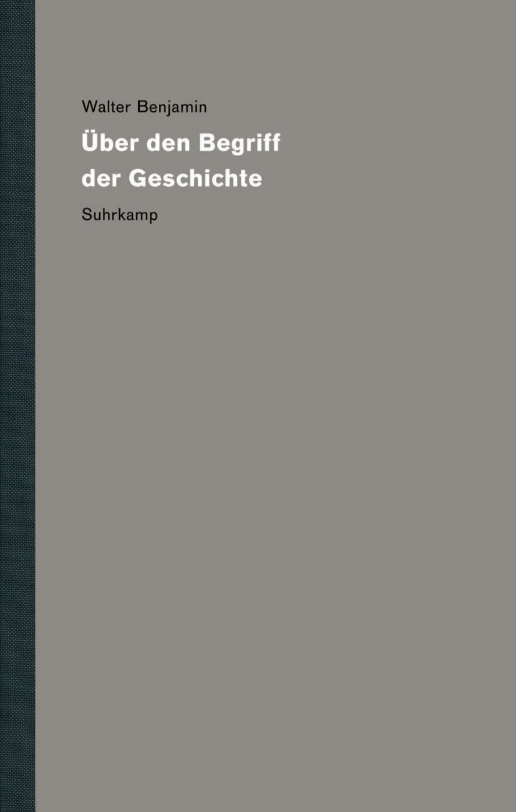
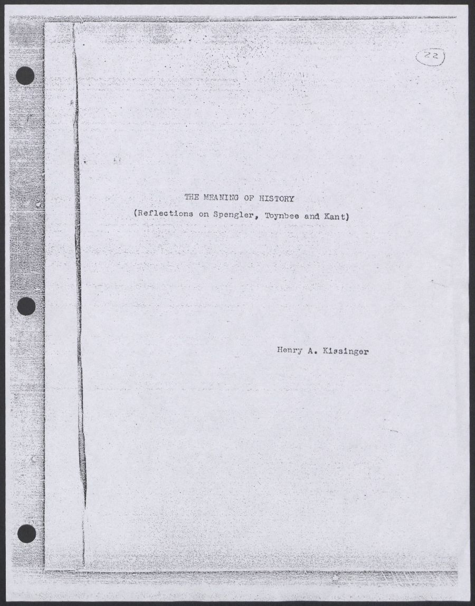
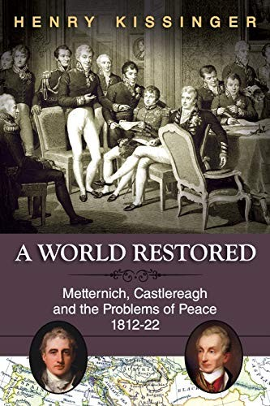
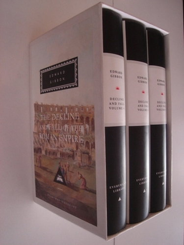
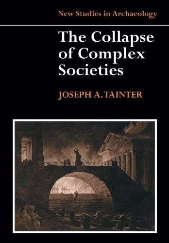

1:01:12 · 15 OPERE
La dimensione religiosa della storia e la deriva patologica.
Il filo del discorso
Il relatore interroga l’idea che la storia sia diretta verso un esito necessario e positivo. Il monologo di Macbeth apre il confronto con le letture teleologiche della vita, mentre la misura del tempo introduce il ruolo di calendari, orologi e organizzazione economica. Il discorso passa quindi alle promesse sul futuro e al modo in cui possono orientare le scelte del presente: la comunicazione durante la pandemia è interpretata dal relatore attraverso questo schema, con giudizi polemici che non costituiscono una verifica sanitaria o una prova di coordinamento occulto. L’angelo della storia di Benjamin offre un’immagine alternativa al progresso garantito. Una lunga lettura della tesi giovanile di Kissinger sposta l’attenzione sulla domanda se il significato storico venga riconosciuto oppure attribuito; il relatore ne ricava una critica politica e morale, che resta distinta dall’analisi del testo e dagli accertamenti su singole condotte. La riflessione sul declino delle civiltà attraversa poi Spengler, Gibbon e Tainter, fino ad Anders e allo scarto fra capacità tecnica, immaginazione e responsabilità. Florenskij e Rohde riaprono il tema dell’anima, mentre Utz fornisce un’immagine narrativa della cultura che sopravvive sotto una dittatura. La conclusione propone la libertà come indicatore della vitalità culturale. Le parole follia e patologia appartengono alla retorica del relatore: la scheda non le trasforma in diagnosi di individui, credenti o gruppi sociali.
I libri nel discorso

Macbeth
Copertina: BUR Classici, 25 gennaio 2022, introduzione, note e traduzione di Rocco Coronato, testo inglese a fronte, 272 pagine; ISBN 9788817160667.
Immagine autentica dell’opera, controllata visivamente; l’edizione di riferimento non è attribuita al filmato.
Monologo di Macbeth letto in traduzione, atto V, scena 5; non si diagnostica autore o personaggio.
Passaggio 1:33 ↗ · Fonti e libro ↗
1984
Identificazione probabile
Copertina: Newton Compton · edizione illustrativa
Orwell e libertà/schiavitù identificano 1984, poi O’Brien torna a 2577 secondi.
Passaggio 18:22 ↗ · Fonti e libro ↗
Sul concetto di storia (Über den Begriff der Geschichte)
Identificazione probabile
Copertina: Copertina ufficiale Suhrkamp del volume19 dell’edizione critica, a cura di Gérard Raulet, prima uscita 2010, ristampa 2021, ISBN 9783518585498. Nome Benjamin e titolo tedesco leggibili su fondo grigio. Il testo è del 1940; non si attribuisce questa edizione al filmato.
Immagine autentica dell’opera, controllata visivamente; l’edizione di riferimento non è attribuita al filmato.
Benjamin e lunga lettura dell’angelo della storia identificano la tesi IX; data corretta 1940.
Passaggio 23:24 ↗ · Fonti e libro ↗
The Meaning of History: Reflections on Spengler, Toynbee and Kant
Frontespizio della tesi, Yale University Library: Harvard · tesi del 1950 · copia archivistica Yale MS 2004
Frontespizio autentico della copia finale conservata in Henry A. Kissinger Papers, Part III, MS 2004, scatola 219, fascicolo 10, Yale University Library. Terza immagine della prima parte digitale, OID 15212792. Il documento non è un’edizione commerciale. È stata scaricata soltanto questa pagina bibliografica insieme a due pagine preliminari scartate; il testo integrale non viene esportato.
Kissinger e senior honors thesis espliciti; titolo Il significato della storia e anno 1950 a 2151–2266 secondi.
Passaggio 30:29 ↗ · Fonti e libro ↗
La Repubblica
Identificazione probabile
Copertina: Laterza · La Repubblica · edizione con testo a fronte di riferimento
Immagine associata all’ISBN di riferimento e controllata visivamente; edizione e traduzione non identificate come quelle citate o lette nel video.
Platone e il governo di chi non desidera il potere sono compatibili con Repubblica VII, 520d–521b; titolo non pronunciato.
Passaggio 32:14 ↗ · Fonti e libro ↗
The Trial of Henry Kissinger
Identificazione probabile
Copertina: Twelve / Hachette · nuova edizione 2012
Copertina autentica dell’edizione paperback Twelve del 10 aprile 2012, con introduzione di Ariel Dorfman, pubblicata da Hachette. Edizione del video non identificata; nessuna identificazione con una sentenza o un dossier giudiziario ufficiale.
Libro contro Kissinger e contenuti compatibili con Hitchens; autore non nominato e titolo reso liberamente.
Passaggio 33:22 ↗ · Fonti e libro ↗
A World Restored: Metternich, Castlereagh and the Problems of Peace, 1812–22
Copertina: Echo Point Books & Media · edizione paperback
Copertina autentica della ristampa Echo Point, distribuita da OpenLibrary per ISBN 9781626549784. L’editore registra questo ISBN per il paperback e 9781626549777 per il cartonato. L’immagine non è attribuita all’esemplare consultato dal relatore.
Titolo Un mondo restaurato, Kissinger, Metternich e Castlereagh espliciti.
Passaggio 34:50 ↗ · Fonti e libro ↗
Mein Kampf
Copertina: Hitler, Mein Kampf. Eine kritische Edition, Institut für Zeitgeschichte, 2016, due volumi, a cura di Christian Hartmann, Thomas Vordermayer, Othmar Plöckinger e Roman Töppel; ISBN 9783981405231.
Immagine autentica della copertina grigia dell’edizione critica dell’Institut für Zeitgeschichte. Si tratta di un’opera in due volumi: l’immagine piana di copertina non è dichiarata fotografia completa dei due volumi né edizione originale nazista. La ristampa precisa illustrata non è attribuita dal solo ISBN.
Titolo e Hitler espliciti in una digressione sul valore degli scritti come documenti.
Passaggio 39:22 ↗ · Fonti e libro ↗
Il tramonto dell’Occidente
Identificazione probabile
Copertina: Nino Aragno, 2019 · volume II, seconda parte · edizione di riferimento
Spengler e la questione del tramonto delle civiltà richiamano probabilmente l’opera; titolo non pronunciato.
Passaggio 45:19 ↗ · Fonti e libro ↗
The History of the Decline and Fall of the Roman Empire
Cofanetto dei volumi 1–3: Decline and Fall, Gibbon: Everyman, 16 settembre 1993, cofanetto dei volumi 1–3, 1952 pagine secondo l’editore. Opera originale pubblicata nel 1776–1788.
Fotografia ufficiale del cofanetto Everyman dei primi tre volumi, con immagine di rovine e dorsi bianchi e neri. Non è presentato come l’opera completa né come l’edizione letta dal relatore.
Gibbon e titolo sul declino e la caduta dell’Impero romano espliciti.
Passaggio 46:37 ↗ · Fonti e libro ↗
The Collapse of Complex Societies
Identificazione probabile
Copertina: Cambridge University Press · paperback 1990
Copertina autentica del paperback Cambridge per ISBN 9780521386739, distribuita da OpenLibrary. Il colophon ufficiale distingue la prima pubblicazione del 1988 dalla prima edizione paperback del 1990; non viene assegnata un’edizione al video.
Tainter e rapporto fra complessità e collasso; titolo del volume non pronunciato, identificazione probabile.
Passaggio 47:07 ↗ · Fonti e libro ↗
L’uomo è antiquato
Copertina del volume I: Bollati Boringhieri · 2007 · copertina del volume I
L’opera è pubblicata in due volumi. L’immagine mostra il volume I, Considerazioni sull’anima nell’epoca della seconda rivoluzione industriale, nell’edizione Bollati Boringhieri di riferimento. Il video non precisa il volume e non viene attribuito a questa edizione.
Anders, opera in due volumi e sottotitoli sono riconoscibili; mantenuto un solo ID per l’opera complessiva.
Passaggio 48:01 ↗ · Fonti e libro ↗
La colonna e il fondamento della verità. Saggio di teodicea ortodossa in dodici lettere
Copertina: San Paolo · seconda edizione, ottobre 2010
Immagine autentica dell’opera, controllata visivamente; l’edizione di riferimento non è attribuita al filmato.
Florenskij e La colonna e il fondamento della verità espliciti.
Passaggio 53:22 ↗ · Fonti e libro ↗
Psyche. Seelencult und Unsterblichkeitsglaube der Griechen
Copertina: Encre Marine / Les Belles Lettres · traduzione francese 2017
Copertina autentica della versione francese Psyché. Le culte de l’âme chez les grecs et leur croyance à l’immortalité, distribuita dall’editore Les Belles Lettres, 21 marzo 2017. L’opera è di fine Ottocento; questa traduzione non viene attribuita al video.
Rohde e titolo Psyche espliciti; grafia dell’autore normalizzata dalla trascrizione automatica.
Passaggio 55:12 ↗ · Fonti e libro ↗
Utz
Copertina: Adelphi · gli Adelphi 163, 2000 · traduzione di Dario Mazzone
Immagine autentica dell’opera, controllata visivamente; l’edizione di riferimento non è attribuita al filmato.
Chatwin e titolo Utz espliciti, con episodio degli intellettuali costretti a lavori manuali.
Passaggio 58:44 ↗ · Fonti e libro ↗